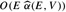
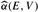

|
|
< Day Day Up > |
|
Tarjan [292] surveys the minimum-spanning-tree problem and provides excellent advanced material. A history of the minimum-spanning-tree problem has been written by Graham and Hell [131].
Tarjan attributes the first minimum-spanning-tree algorithm to a 1926 paper by O. Boruvka. Boruvka's algorithm consists of running O(lg V) iterations of the procedure MST-REDUCE described in Problem 23-2. Kruskal's algorithm was reported by Kruskal [195] in 1956. The algorithm commonly known as Prim's algorithm was indeed invented by Prim [250], but it was also invented earlier by V. Jarník in 1930.
The reason why greedy algorithms are effective at finding minimum spanning trees is that the set of forests of a graph forms a graphic matroid. (See Section 16.4.)
When |E| = Ω(V lg V), Prim's algorithm, implemented with Fibonacci heaps runs in O(E) time. For sparser graphs, using a combination of the ideas from Prim's algorithm, Kruskal's algorithm, and Boruvka's algorithm, together with advanced data structures, Fredman and Tarjan [98] give an algorithm that runs in O(E lg* V) time. Gabow, Galil, Spencer, and Tarjan [102] improved this algorithm to run in O(E lg lg* V) time. Chazelle [53] gives an algorithm that runs in  time, where  is the functional inverse of Ackermann's function. (See the chapter notes for Chapter 21 for a brief discussion of Ackermann's function and its inverse.) Unlike previous minimum-spanning-tree algorithms, Chazelle's algorithm does not follow the greedy method.
A related problem is spanning tree verification, in which we are given a graph G = (V, E) and a tree T ⊆ E, and we wish to determine whether T is a minimum spanning tree of G. King [177] gives a linear-time algorithm for spanning tree verification, building on earlier work of Komlós [188] and Dixon, Rauch, and Tarjan [77].
The above algorithms are all deterministic and fall into the comparison-based model described in Chapter 8. Karger, Klein, and Tarjan [169] give a randomized minimum-spanning-tree algorithm that runs in O(V + E) expected time. This algorithm uses recursion in a manner similar to the linear-time selection algorithm in Section 9.3: a recursive call on an auxiliary problem identifies a subset of the edges E′ that cannot be in any minimum spanning tree. Another recursive call on E - E′ then finds the minimum spanning tree. The algorithm also uses ideas from Boruvka's algorithm and King's algorithm for spanning tree verification.
Fredman and Willard [100] showed how to find a minimum spanning tree in O(V + E) time using a deterministic algorithm that is not comparison based. Their algorithm assumes that the data are b-bit integers and that the computer memory consists of addressable b-bit words.
|
|
< Day Day Up > |
|